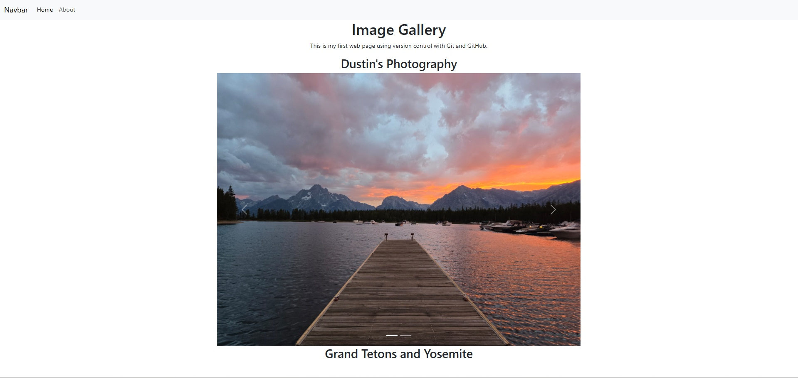

My Bootstrap Project
My very first webpage
This was my very first project in html.
I incoporated the bootstrap framwork to handle styling, a classic case of abstration in computer science.
You can visit the webpage here.
This was my very first project in html.
I incoporated the bootstrap framwork to handle styling, a classic case of abstration in computer science.
You can visit the webpage here.